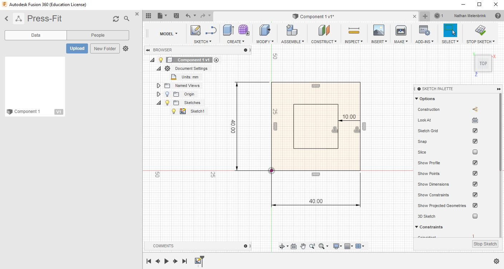
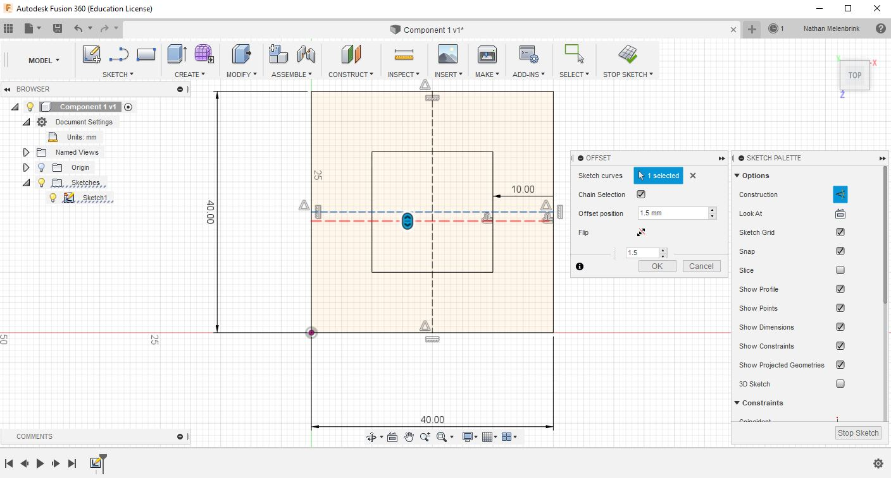
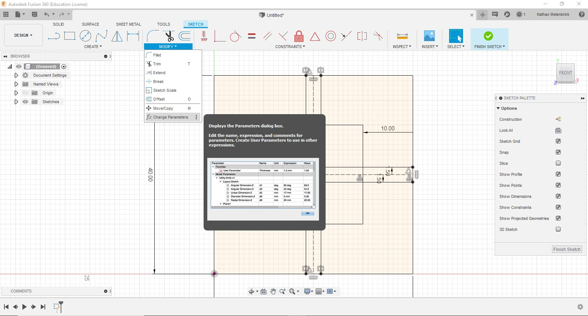
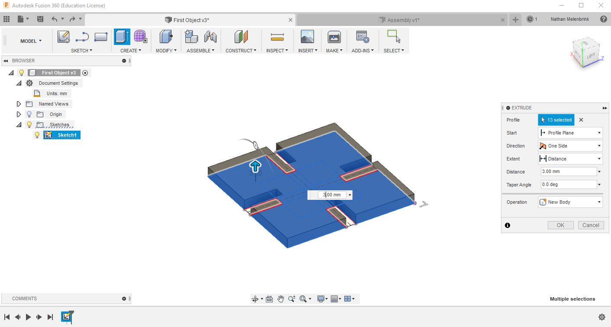
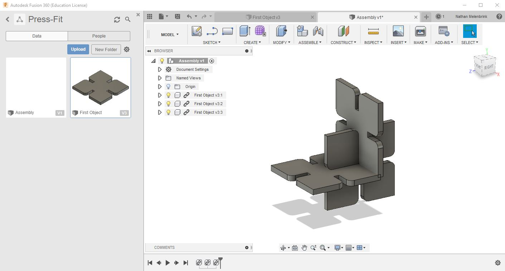

Almost all Fusion 360 projects begin with a sketch. Sketches are 2D vector drawings that can be used as templates for 3D objects -- but they're also useful in and of themselves for making cuts in sheet material. This tutorial will go through the basics for creating a design for a press-fit construction kit, modifying it, and exporting it to cut on the laser cutter. Most of the techniques that will be needed are covered in this video.
For our first exercise in Fusion 360, we'll be designing and laser cutting a press-fit assembly kit -- a collection of one or more types of components which can be reconfigured to form different shapes. Some examples include stacking resistor boxes, connecting disks, and a truncated icosahedron.
Open Fusion. Start by making a new folder called something like "Press-fit". In your modeling window, click the "Sketch" tab and select the XY plane such that your sketch is visible from the Top view. Expand the Document Settings menu and make sure you're working in mm units. Go ahead and save the file to your new folder as something like "First Object".
Find "Rectangle" in the Sketch tab, and draw an outline for your component. 40mm by 40mm is a good size to start (you can change it later by double-clicking on the sketch dimension). Now we need to make notches in the component. Press "O" to offset the rectangle boundary to the inside of the shape. Try offsetting by -10mm. This will give us a uniform notch depth.
Now let's mark the midpoint of each edge to show where to place the notch. In the Sketch Palette, click "Construction" to make construction lines. Type "L" and draw horizontal and vertical mid-lines. Next we'll want to unselect "Construction" and Offset the horizontal mid-line by half the thickness of the material (if you haven't already, measure the thickness of the material with a caliper).
Next, under the Sketch tab, select the "Mirror" command, and mirror the offset line around the original mid-line. Offset and mirror the vertical line as well. This is all of the construction geometry we need for the sketch. Try clicking dimensions and editing them. Click "Stop Sketch".
One consideration that we've overlooked so far is the kerf, or the width of the material that is removed as the laser burns through it. Typically this is a few tenths of a millimeter, so it may seem negligible. However, if we want our notches to fit tightly, it's important to include this. We can set user parameters (Modify -> Change Parameters) and set a material thickness parameter as well as a kerf parameter. Then we can set our notch width to be (thickness - kerf).
Once you're happy with your sketch, let's extrude it to make a 3D representation. Click the "Home" icon in the top right navigation gizmo to go into perspective view. Type "E" to extrude, and click all of the boundary areas you want to include in the extruded shape. Type in the thickness of the material and click OK.
A common technique in 3D design and fabrication is to fillet or chamfer edges of your design. Fillets refer to rounded corners/edges while chamfers refer to angled corners/edges. Sometimes this is done to reduce stress or get rid of sharp angles. In our case, we'll use fillets to make it easier to align our pieces and press them together. It's possible to apply fillets in the Fusion Sketch mode, but it's fewer steps in 3D. Type "F" for fillet and select the 8 outer corners of the notches. Try a radius of about 3mm. Click OK and save your file.
We won't really get into 3D until later weeks, but it can be useful to make a test assembly of our components in 3D before we cut them out. Create a new file called "Assembly" and drag and drop your "First Object" into it. You'll see it enter your hierarchy as a linked component. Try copying and pasting a few components and move/rotate them so that they intersect with each other. Does it match your expectations? By doing this I realized that my notches are too deep, and should be modified before I cut. If I edit and save my original "First Object" file, I'll get a "caution" icon next to each referenced component, which invites me to update the reference.
Once we're happy with our design, we'll want to array the pieces in 2D to send to the laser cutter. You can create a 2D cut array in Fusion, but it's just as easy to do in the laser cutter software. We just need to Project the outline of our final shape in order to exclude construction lines from our cut file. Press "P" to project (or go to Sketch > Project/Include > Project).
Turn off the light bulbs for your 3D components, leaving only the 2D Sketch visible. Right-click on the Sketch containing the projected geometry (should be the only one in your file) and select Save As DXF. That's all we need; we're ready to take it to the laser.
This is just one of many ways to complete this assignment. You are strongly encouraged to look through forums and other tutorials to learn new techniques and methods.